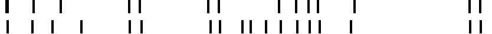
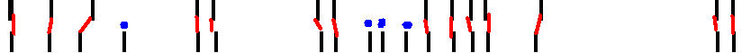
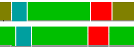
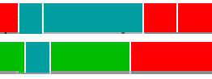
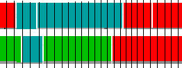

Classes and programs to investigate annotations that are non-overlapping, possibly (but not necessarily) continuous, and potentially multi-label.
Note: before delving into this package, you probably want to read the documentation of the nite.datainspection package first, especially its introduction into the datainspection.data, datainspection.calc and datainspection.impl packages.
Note 2: This package is still being developed further.
an example 'timespan' annotation
A list of inspection tools and procedures in this package:
- QuickScan
- Boundary based inspection
- Segment alignment based inspection
- Timeline Discretization
- Comparison of the methods
The QuickScan class is intended to generate a quick and dirty report on some simple properties of a multiply annotated observation.
Currently it reports some information about the variations in the length of identified segments.
Introduction
Recall the summary in the nite.datainspection package documentation: Data inspection consists of
- finding out whether separate annotators identified the same Items (segments, units for labeling),
- finding out whether comparable Items have been assigned the same Values (labels, classes, categories) by the annotators and
- finding out where disagreement lies, i.e. what Values are confused with each other in what situations; what type of Items are most often NOT identified by both annotators at the same time; etc.
- (Investigating the nature of the errors that annotators made, and deciding how important these errors are, given the use for which the annotations were created.)
The Boundary Based inspections are involved with one possible approach to step one: finding out whether separate annotators identified the same items or events in the data.
In this analysis, the focus is on detection whether two annotators identified a change point or boundary at the same moment, i.e. a start or end of a segment. This is a sensible approach to take if the detection of boundaries is explicitly defined as a separate step in the annotation instructions (e.g. "The task consists of two parts: first, defining "cuts" (segmentation points)
in the video of a person at places where you see a distinct change in the mental state of this person, and second, to fill in a form that describes each segment that is thus created."). The two images below show how a segmentation of the timeline can be interpreted in terms of boundaries rather than segments.
an example 'timespan' annotation for two annotators

an example derived 'boundary' annotation for two annotators
The second image represents the lists of {@link net.sourceforge.nite.datainspection.timespan.Boundary Boundaries} extracted by the {@link net.sourceforge.nite.datainspection.timespan.BoundaryExtractor} for the two annotators. To interpret this in terms of 'whether the annotators identified the same boundaries', the relation between those derived boundary annotations must be analysed. The image below shows some relevant information. The red lines mark where two annotators found the same boundary, determined with a certain threshold 'th'; the blue dots mark boundaries found by only one annotator.

the alignment of the derived boundaries.
Boundary based inspection: How does it work?
The documentation of the class {@link net.sourceforge.nite.datainspection.timespan.BoundaryBasedInspection} explains this type of analysis in detail.
Boundary based inspection: Conclusion
All in all, the class {@link net.sourceforge.nite.datainspection.timespan.BoundaryBasedInspection} and its supporting classes provide support for determining a sensible threshold for boundary alignment as well as for performing this alignment. In the end, the percentual agreement on the occurrence of boundaries gives an indication of how often annotators find the same boundaries, and the determined threshold value gives an indication of how precise the timing of the annotations is.
This section describes an inspection tool that looks at full segments rather than boundaries.
Back to the summary in the nite.datainspection package documentation: Data inspection consists of
- finding out whether separate annotators identified the same Items (segments, units for labeling),
- finding out whether comparable Items have been assigned the same Values (labels, classes, categories) by the annotators and
- finding out where disagreement lies, i.e. what Values are confused with each other in what situations; what type of Items are most often NOT identified by both annotators at the same time; etc.
- (Investigating the nature of the errors that annotators made, and deciding how important these errors are, given the use for which the annotations were created.)
The Segment Based inspections are involved with another approach to step one: finding out whether separate annotators identified the same items or events in the data.
In this analysis, the focus is on detection whether two annotators identified the same segments at the same moment.
The image below shows a (hypothetical) example annotation fragment. The key point of the inspections described in this section is that the pair of blue annotation elements as well as the pair of red ones are both considered to be "the same Item identified by both annotators, and given the same label", with the precision of the timing slightly off. This means that a confusion table of this annotation would show two instances of confusion between the labels 'green' and 'brownish-green', and no confusion between red and green or blue and green, even if there is some overlap in time for these labels. Furthermore this analysis does not take the length of the aligned segments into account: a (dis)agreement between two segments counts equally for two long or two short segments.

an example 'timespan' annotation for two annotators
The documentation of the class {@link net.sourceforge.nite.datainspection.timespan.SegmentBasedInspection} explains in detail how such inspection along these lines is supported by the packages, including an explanation how the calculation of kappa and alpha metrices is supported, and the automatic creation of confusion tables.
PROGRAM FOR THIS ANALYSIS NOT YET COMMITTED TO CVS
Some annotations do not lend themselves well for the event-like interpretation underlying the Segment alignment inspection.
[[EXAMPLE?]]
For such annotations we developed an analysis based on the amount of overlap for different labels. In the (hypothetical) example fragment below, we encounter from left to right the following agreements and disagreements: disagr(red, green), disagr(blue, green), agr(blue,blue), disagr(blue,green), disagr(blue,red), agr(red,red). Note the difference with the segment alingment based inspection. In the segment alignment inspection the first blue segment of the two annotators would be seen as "perfect agreement for identification and label, with some disagreement about timing". In the timeline discretization analysis the short overlap between green and blue at the beginning is counted as a label disagreement.

an hypothetical annotation fragment
This analysis is based on a discretization of the timeline. The image below shows this discretization for a certain size 'th'. The small timeline segments are considered the Items in the reliability analysis; the Values are derived from the largest annotation element in this segment. For example, the first few labels for the small segments for the upper annotation are "red, red, blue, blue, blue, blue, ..." etc. The (dis)agreements between the annotators start then with "disagr(red, green), disagr(red, green), disagr(blue, green), agr(blue,blue), agr(blue,blue), agr(blue,blue), disagr(blue,green), ..." etc. Note that longer stretches of a certain (dis)agreement count more in the final outcome than the shorter stretches. Furthermore, setting 'th' too high means that small annotation elements will not be counted anymore.

the annotation fragment discretized
The documentation of the class {@link net.sourceforge.nite.datainspection.timespan.DiscretizedTimelineInspection} explains in detail how such inspection along these lines is supported by the packages, including an explanation how the calculation of kappa and alpha metrices is supported, and the automatic creation of confusion tables. It also explains how varying 'th' has an impact on the outcome of the reliability measures.
TODO: Describe how to make reports for 'merged' label sets where you take subsets of labels together into one class.